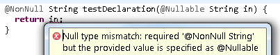
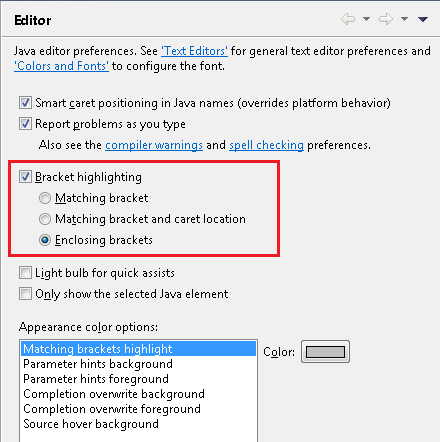
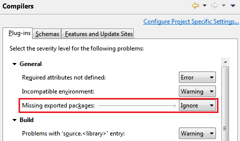

Here are some of the more noteworthy things available in milestone build M6
(March 16, 2012) which is now available for download.
Unless otherwise indicated, all entries listed here are available in both the 3.8 and 4.2 development streams.
See the build notes for details about bugs fixed and other changes.
| Equinox |
| OSGi Core Release 5 |
With this milestone the Equinox OSGi Framework implements the
draft OSGi Core Release 5 (R5) specification. The OSGi Core
R5 specification is an incremental change from the R4.3
specification. A majority of the changes included in
the Core R5 specification are in support of the upcoming
OSGi Enterprise Release 5 specification. A public draft of
the specification will be available
here
by March 26, 2012. The final version will be available
here
shortly after that.
|
| Publisher Support for Negation Requirements |
The p2/publisher can now publish negation requirements.
A negation requirement is a requirement that must not
be present. For example, RAP (The Rich Ajax Platform) can
declare a negation requirement on the Eclipse Platform, meaning
that RAP won't be installable into your IDE.
Negation requirements are specified using the p2.inf file.
Details are available on the Wiki
|
| |
| Platform |
[ Not available yet ] |
| Resources
|
[ Not available yet ] |
| SWT
|
[ Not available yet ] |
| Platform UI
|
[ Not available yet ] |
| User Assistance
|
[ Not available yet ] |
| Platform Text
|
[ Not available yet ] |
| Team/CVS
|
[ Not available yet ] |
| Compare
|
[ Not available yet ] |
| Ant
|
[ Not available yet ] |
Debug |
| RelaunchLastAction has been made API |
The internal class RelaunchLastAction has been promoted to API and can be found in the
org.eclipse.debug.ui.actions package.
|
| Add new expression image constant has been made API |
The constant IDebugUIConstants.IMG_OBJ_ADD_NEW_EXPRESSION has been added to API to allow consumers who
extend / use the Expressions view look-and-feel to use the Add New Expression icon
( ). ).
|
| Toggle breakpoints target manager has been made API |
The interface org.eclipse.debug.ui.actions.IToggleBreakpointsTargetManager has been made API to allow clients
access to known IToggleBreakpointTargets. The new API can be accessed via
org.eclipse.debug.ui.DebugUITools#getToggleBreakpointsTargetManager()
|
| BreakpointTypesContribution has been made API |
The class org.eclipse.debug.ui.actions.BreakpointTypesContribution has been added to API. This class
can be reused by clients to add a breakpoint type action in the editor gutter context menu to match the action(s) that appear in the
Run > Breakpoint Types menu.
|
| Find action can be customised in Variables View specialisations |
Consumer now have the ability to completely override the behaviour of the Find... action in the Variables View and any of
its sub-classes, e.g. Expressions View, Modules View, etc.
To replace the default Find... actions clients must provide an adapter for the
interface org.eclipse.debug.internal.ui.viewers.model.provisional.IViewActionProvider.
For more information see the Javadoc for org.eclipse.debug.internal.ui.viewers.model.provisional.IViewActionProvider
with an example available in the org.eclipse.debug.examples.ui bundle found in the Platform Debug Git repo.
|
| Improved launch configuration name validation |
Now if you create a launch configuration with the name of an existing configuration, the type of the conflicting configuration
is noted in the error message.

|
[ Not available yet ] |
| JDT |
| Selectively ignore errors/warnings from source folders |
You can now configure JDT to ignore optional errors/warnings from certain source folders.
Project properties > Java Build Path > Compiler > Source.

With this option set to Yes, JDT will suppress errors/warnings configured in the
Preferences > Java > Compiler > Errors/Warnings page. This can be desirable
for source folders that contain auto-generated classes or tests.
|
| Improved messages for null analysis problems |
The wording of several error messages and compiler options in
Preferences > Java > Compiler > Errors/Warnings > Null analysis has been improved:
- Violation of null specification

Here, 'in' is not a legal return value because of the @Nullable annotation in its declaration.
- Conflict between null annotations and null inference

Here, 'local' is not a legal return value, because flow analysis for the un-annotated variable 'local' infers that
it can be null on some path.
- Unchecked conversion from non-annotated type to @NonNull type

Here, the return value from 'getLegacyValue()' may or may not be compatible to '@NonNull String'.
Similar to converting a legacy raw type to a generic type, also here essential type information is missing
since 'getLegacyValue()' has no @NonNull or @Nullable annotation.
|
| Detection of missing default nullness annotation |
You can now configure JDT to detect a missing default nullness annotation when using the annotation-based null analysis.
When Preferences > Java > Compiler > Errors/Warnings > Null analysis > Missing '@NonNullByDefault' annotation on package
is enabled, JDT will issue an error/warning in the following cases:
- When a package does not contain an '@NonNullByDefault' annotation in the package-info.java:

- When a type inside a default package does not contain a default nullness annotation.

Note that the option Use non-null as workspace wide (or project-wide) default has been withdrawn.
Instead, you can enable the Missing '@NonNullByDefault' annotation on package option and make sure you specify the default nullness
annotation on all types/packages.
|
| Null analysis treats org.eclipse.core.runtime.Assert like Java assert |
Since org.eclipse.core.runtime.Assert is often used just like the Java assert keyword, JDT's null analysis considers
the boolean expression passed into the former as always true after the Assert reference, since if the condition did turn out to be false,
the control flow will never go further than the org.eclipse.core.runtime.Assert reference.

|
| Null analysis for fields withdrawn |
"No man loves the bearer of bad tidings", said Sophocles.
While we're proud to announce all the recent enhancements in JDT's null analysis, we have decided to withdraw the support added
for null analysis of fields in Juno M5 so that a more general and configurable solution could be considered in future without
being constrained by the present implementation.
Stay tuned!
|
| Resource leak detection improved and enabled by default |
Resource leak detection as introduced in JDT Juno M3 is now less aggressive if a resource
is shared between methods, possibly via a field, where any party accessing the resource
could possibly issue the desired call to close(). This, along with some fine tuning of the
analysis, results in a greatly reduced number of false positives. Thus, the detection of a
definite resource leak is now much more reliable and reporting is set to warning by default.
This can be configured in the Java > Compiler > Errors/Warnings preference page.

|
| Incomplete switch over enum |
JDT now raises a new warning whenever a switch on an enum value lacks a default case, and the option
Preferences > Java > Compiler > Errors/Warnings > Incomplete 'switch' cases over enum is enabled.

Note that in cases like the above, the warning also helps to understand another
error against the last statement:
"The local variable printString may not have been initialized"
is reported because clients could possibly call the method print(Color) with an
enum value that is not known at the time of compiling this method.
|
| Show Monitors on by default |
The default setting for displaying monitor information in the Debug View is now set to on.
This change only affects new workspaces and does not change existing settings.
Showing monitor information can be turned on or off using the Java > Show Monitors view action
within the Debug View.
|
| Toggle breakpoint modifier keys |
There is now support for modifier keys while toggling breakpoints in the Java editor:
If there is no existing breakpoint, a normal breakpoint toggle takes place even if a modifier key is held down.
|
| Improved bracket matching support in Java editor |
The Java editor now supports highlighting of enclosing brackets.

This can be configured on Java > Editor preference page.

Also the Navigate > Go To > Matching Bracket action (Ctrl+Shift+P) now works everywhere in a file. If a bracket is not selected
before invoking the action, the action navigates to the nearest enclosing end bracket. On invoking the action the second time, the action
navigates to corresponding start bracket. On the third invocation, the original selection is restored.
|
| Default implementations for correction proposals |
JDT now provides the following default implementations for correction proposals that can be used to contribute quick fixes and quick assists.
org.eclipse.jdt.ui.text.java.correction.ChangeCorrectionProposalorg.eclipse.jdt.ui.text.java.correction.CUCorrectionProposalorg.eclipse.jdt.ui.text.java.correction.ASTRewriteCorrectionProposal
This makes it easier to implement quick fixes/assists that operate on .java files and use an ASTRewrite.
|
| PDE |
| Target definition configure phase |
When working with a target definition containing a software site location (such as a p2 repository) it is now possible to change whether the p2 configuration phase should be run when resolving the target. By default the configuration phase is not included. Changing the setting will change all locations in the target definition.

|
| Add required in feature based product |
The product editor now has an Add Required button when editing a feature based product. Pressing the button will add all the features that are required by the features already in the product configuration.

|
| Extension editor enhancements |
Several improvements have been made to the extensions tab of the Plug-in Editor.

- Filter related: Available by right clicking and pressing Filter Related, only extensions that are related (same id, label, class, etc) will be displayed in the tree
- Filter enhancements: The standard filter textbox now supports multiple filters separated by "/", matches are bolded, and the filter applies to extension attributes
- Label improvements: More items will display icons and labels, class names are displayed without package name
- Accelerated scrolling: Pressing Ctrl while scrolling does fast scrolling
- Better expansion: The expand state of selected items can be toggled with a new action
- Search workspace: Search the workspace for extensions related to items in the editor
|
| Workspace deletion is cancelable |
Eclipse and OSGi launch configurations have the option to delete the workspace and configuration folders before launching. This can be a long running operation with large workspaces. The operation is now cancelable which will stop the launch.
|
| Highlighting on API Tools preferences |
The PDE and API Tools preference pages for changing errors and warnings now highlight the setting your mouse pointer hovers over.

|
| API Tools tracing |
API Tools has added all debug tracing settings to the Tracing preference page where they can be enabled and disabled as needed without restarting.

|
| EE descriptions updated |
The API Tools execution environment descriptions have been
updated with more accurate package information and have been renamed for easier installation.
To turn on warnings for invalid references to classes or methods that are not available in the configured execution environment, use the
Plug-in Development > API Errors/Warnings preference page.
The execution environment descriptions can be installed from the Eclipse update site
(http://download.eclipse.org/eclipse/updates/3.8-I-builds)
under the API Tools Execution Environment Descriptions category.

|
| Template
|
| First item |
Item blurb.
|
| |
The above features are just the ones that are new since the previous milestone
build. Summaries for earlier Juno milestone builds: